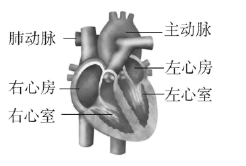
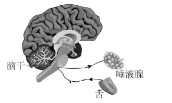
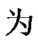

2022年北京市中考生物真题 · 选择题 第11、12、13、14、15题
11. 如图是人体心脏结构模式图。下列相关叙述错误的是

A. 心肌收缩为血液循环提供动力B. 左心室收缩，将血液泵至肺动脉
C. 房、室间的瓣膜可防止血液倒流D. 右心房、右心室内流的是静脉血
12. 尿酸过多在肾小管处形成结晶，会引起上皮细胞坏死，这直接影响肾小管
A. 滤过（过滤）作用B. 重吸收作用C. 贮存尿液D. 排出尿液
13. 为降低血糖，糖尿病患者可注射的激素是
A. 甲状腺激素B. 性激素
C. 生长激素D. 胰岛素
14. 人吃酸梅时，唾液分泌量增加，该反射过程如图所示。下列关于该反射的叙述错误的是

A. 结构基础为反射弧B. 神经中枢在脑干
C. 效应器

唾液腺D. 属于条件（复杂）反射15. 青春期是人一生中重要的发育时期，需保持身心健康。下列做法不恰当的是
A. 关注生殖系统卫生B. 拒绝和异性同学交流
C. 积极参加文体活动D. 主动参与家务劳动